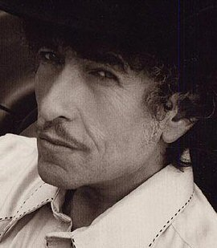
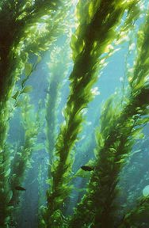

Tuesday, August the 3rd, 2004
back to: title, date or indexes
Introductory Note : This is an important new series from Hooting Yard, in which we will endeavour to catalogue every known song, popular and otherwise, the lyrics of which mention kelp.
Number One : Sara by Bob Dylan, from the album Desire (1975), which includes the line Now the beach is deserted except for some kelp and a piece of an old ship that lies on the shore.

Left : Bob. Right : Kelp.